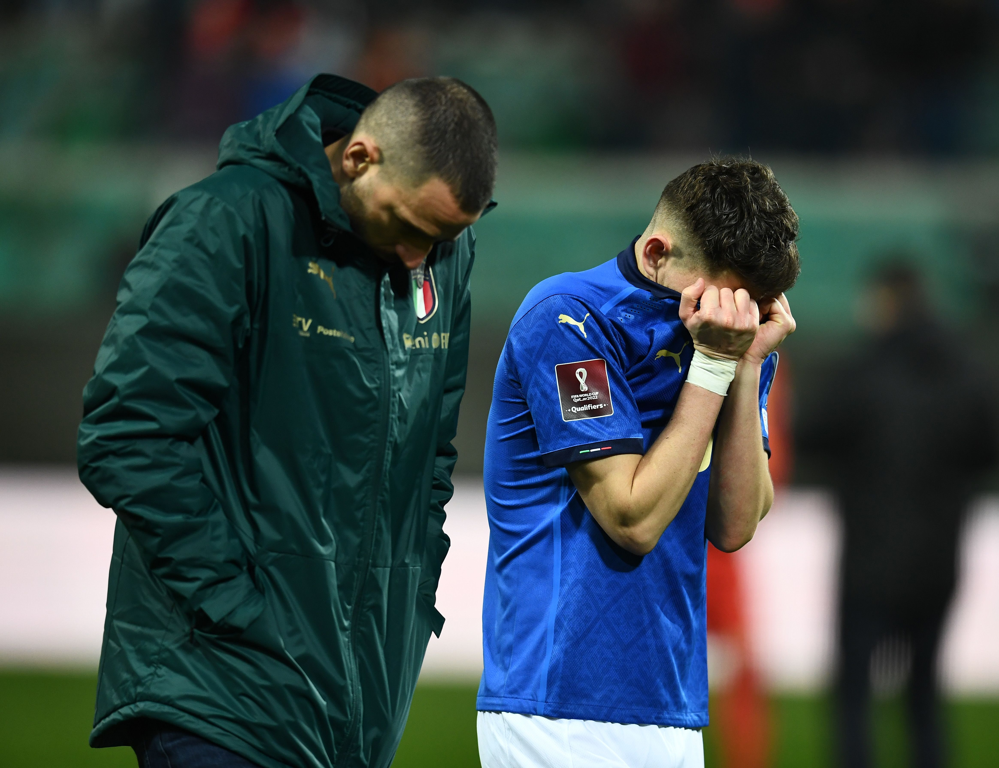
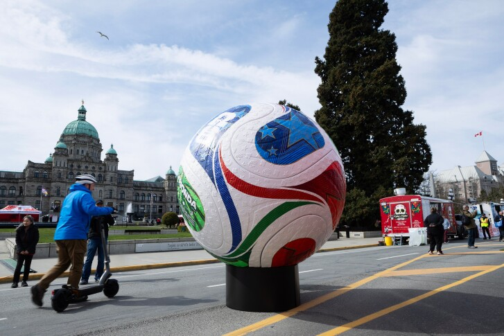
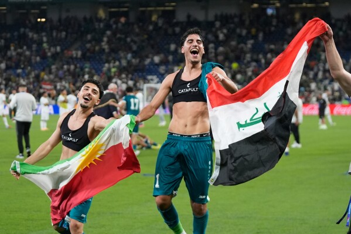
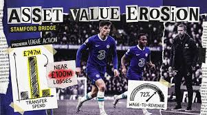

ffside
bserver

Italy Out of World Cup

Final World Cup spots decided in chaotic fashion

Iraq’s qualification is one of the biggest feel-good stories

Chelsea’s financial crisis hits historic levels